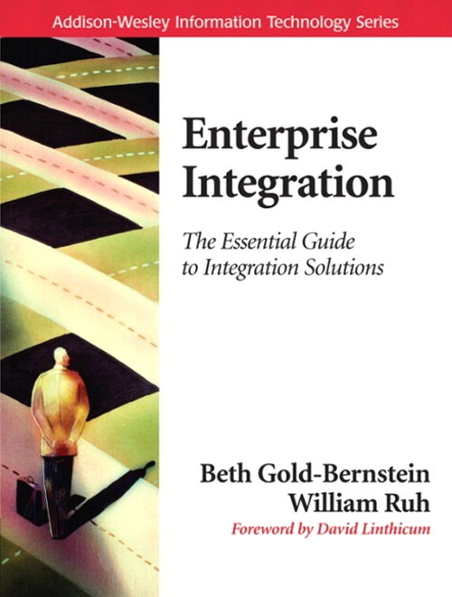

LLM and RAG for Document Analysis and Exploitation
Vietnam Institute for Advanced Study in Mathematics and Banking Academy of Vietnam
ACADEMIC & PROFESSIONAL CV
Business Analytics · Health Informatics · Applied NLP
Hanoi, Vietnam
Business Analytics graduate applying data engineering and NLP to health informatics and fintech research. Experienced in data governance, interoperable health data, and analytical pipelines.
Bachelor in Business Analytics · GPA 3.67/4.00
Thesis: Understanding Fintech Services Evolution in Vietnam; applied BERT-based classification and topic modeling to a 216 MB Vietnamese news dataset. Grade: 9.5/10.
Business Analyst · Health Informatics Analyst
Data Analyst Intern
Designed a pipeline for Vietnamese fintech news collection and downstream NLP using Python, Docker, Kafka, PostgreSQL, MinIO, and Spark SQL.
Co-author of a text-mining review in the International Journal of Innovative Research and Scientific Studies. DOI: 10.53894/ijirss.v9i6.11737 ↗
Languages & analysis: Python, R, SQL, Excel, SPSS
Data & visualization: ETL, PostgreSQL, PySpark, OpenMetadata, Tableau, Power BI, Apache Superset, Looker, Google Sheets
PORTFOLIO
A record of learning, research, and work.
Twenty-one certificates documenting learning, research, and work. Select a scan to see the full document.
Vietnam Institute for Advanced Study in Mathematics and Banking Academy of Vietnam
Vietnam Fund for Children with Disabilities
CFA Institute
LEAD Consulting and HUST School of Economics and Management
LEAD Consulting
Hanoi University of Science and Technology
HUST School of Economics and Management
National Economics University
Hanoi University of Science and Technology
Hanoi University of Science and Technology
ICAEW Vietnam
SAP University Alliances
HUST School of Economics and Management
Hanoi University of Science and Technology
ICAEW
Google and Coursera course certificates are grouped together. A year range is shown where the certificate does not state an issue date.
MY LITTLE LIBRARY
Books to think with, grow with, and pass along.
A growing shelf of fiction, data, and ideas worth returning to.
ON THE SHELF

LITERARY FICTION
José Mauro de Vasconcelos · 1968
A Brazilian coming-of-age classic about imagination, tenderness, and childhood.

DATA SCIENCE
Joel Grus · 2019
Data science fundamentals built from first principles in Python.

TEXT ANALYTICS
Taeho Jo · 2024
Techniques for finding patterns and meaning in text.

SYSTEMS & STRATEGY
Beth Gold-Bernstein & William Ruh · July 2004
Practical approaches to connecting systems across an organization.

VIETNAMESE LITERATURE
Vũ Trọng Phụng · 1936
A satire of status and modernization in colonial Vietnam.
READING, REMEMBERING, RETURNING
Stories and ideas that invite a second look.
MY SOUNDTRACK
A little focus, a little feeling, a little main-character energy.
PERSONAL MIXES